My name is Matan Harazi, I'm originally from Emek Hefer.
30 years old,living with my fiancee in Ramat Gan for a year and a half
I have a degree in business administration and marketing
I personally really like Thailand and will tell you about some recommended places
pai
ko phi phi
phuket
pai
Pai, Thailand:
Pai is a charming town nestled in the mountains of Northern Thailand,
offering a perfect blend of adventure,
relaxation, and natural beauty.
Here's why you should consider visiting:
Stunning Natural Beauty
Pai Canyon: This breathtaking gorge offers stunning viewpoints and hiking trails.
Rice paddies: Lush green landscapes create a serene atmosphere.
Waterfalls: Refreshing escapes from the heat, with Mo Paeng Waterfall being a popular choice.
Hot springs: Relax and rejuvenate in the natural hot springs.
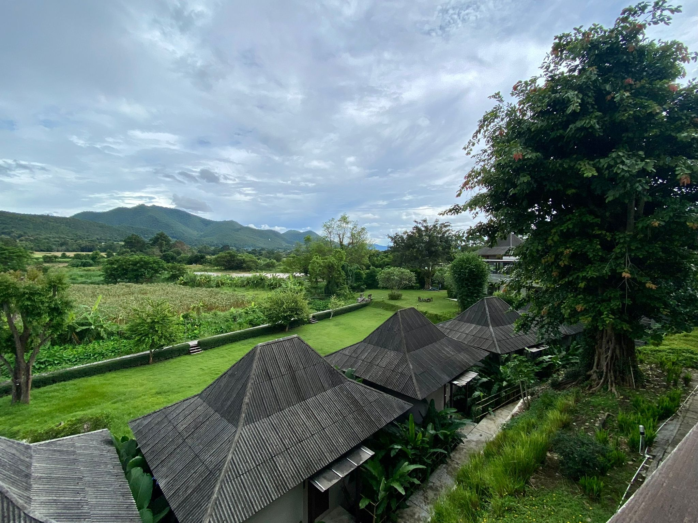
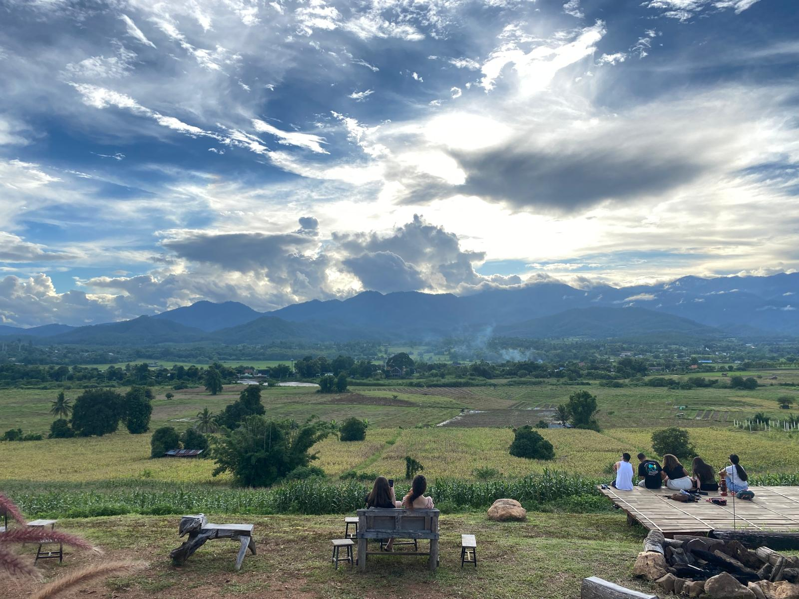
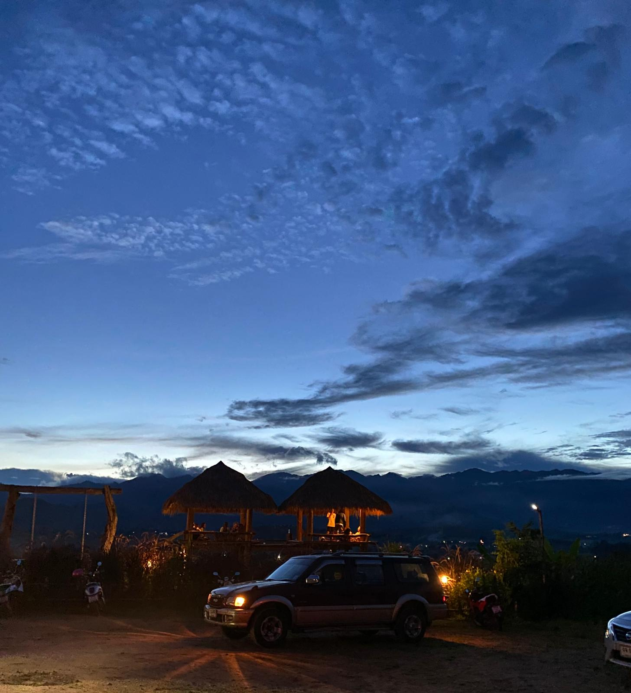
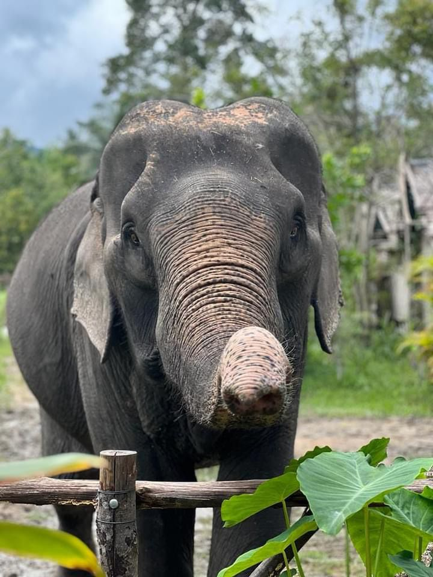
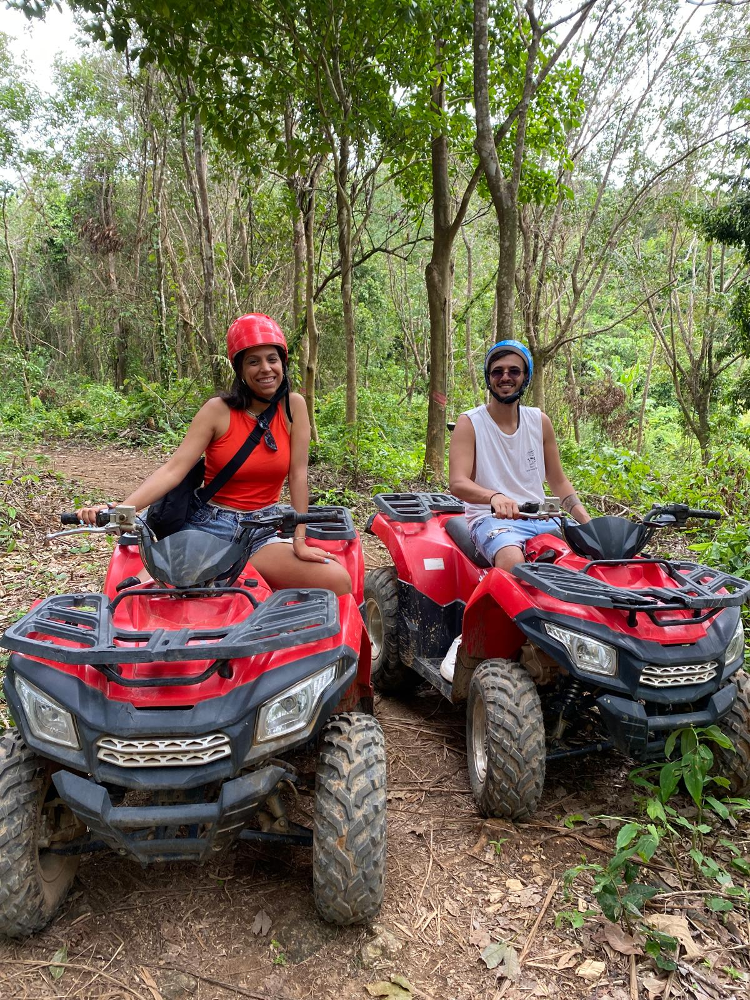
Adventure Activities
Motorbike rentals: Explore the surrounding countryside at your own pace.
Hiking and trekking: Discover hidden trails and waterfalls.
White-water rafting: Get your adrenaline pumping.
Elephant sanctuaries: Ethical encounters with these gentle giants.
ko phi phi
Phi Phi Islands, Thailand: A Tropical Paradise
Phi Phi is a small but stunning island group in the Andaman Sea,
Thailand. The islands are renowned for their white sandy beaches,
crystal-clear turquoise waters, vibrant coral reefs,
and pristine natural beauty.
Phi Phi is a haven for nature lovers, divers, and snorkelers.
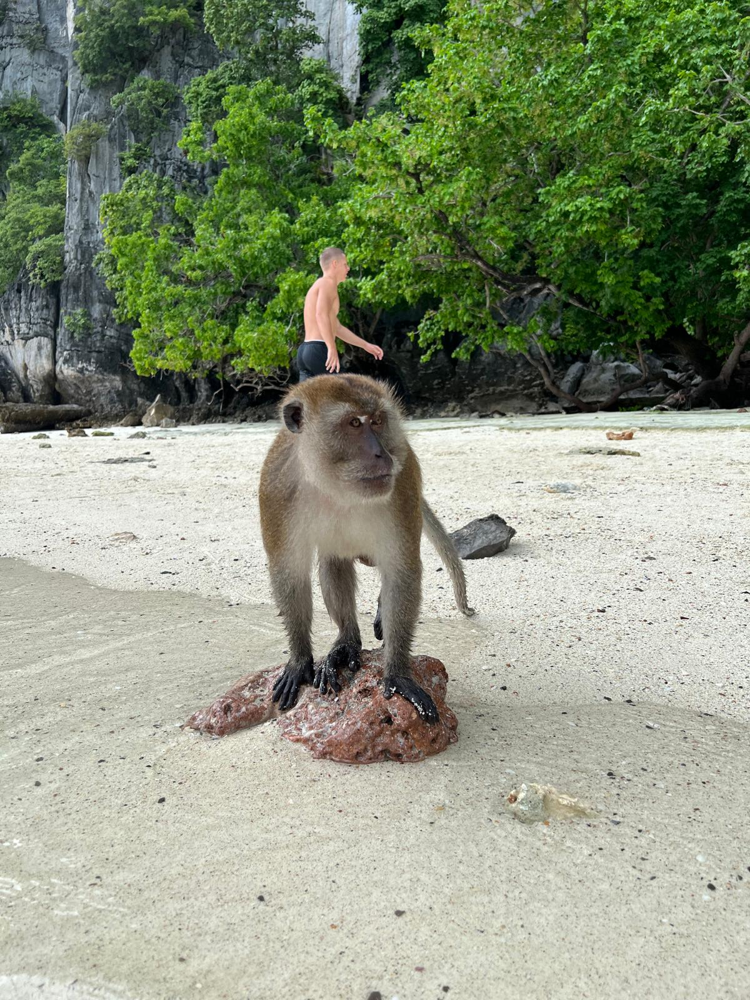
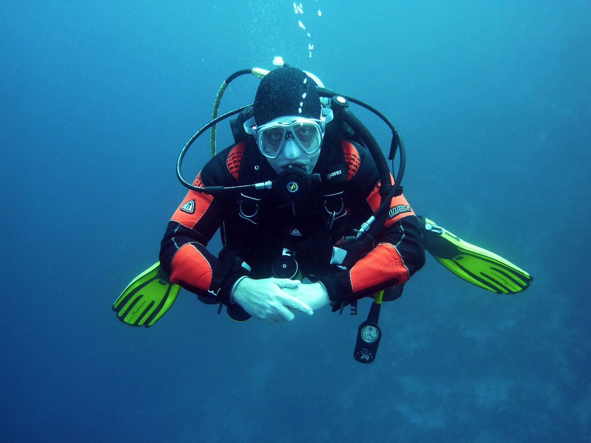
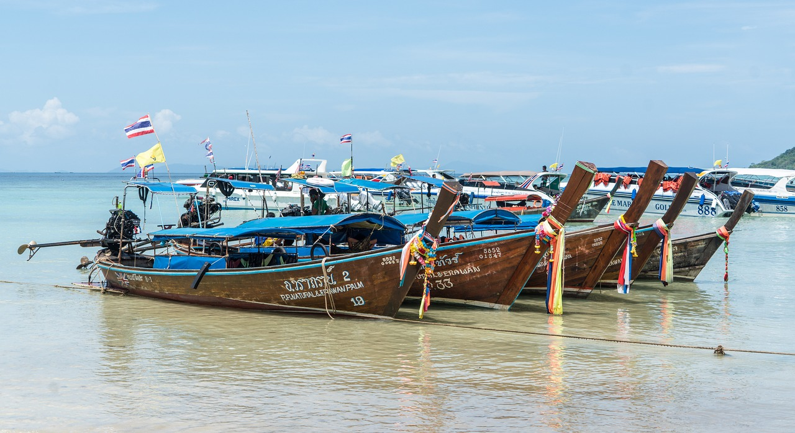
What draws tourists to Phi Phi?
White sandy beaches and turquoise waters: Phi Phi's beaches are considered some of the most beautiful in the world.
Lo Da Lama Bay is a popular beach with soft white sand and clear waters.
Caves and nearby islands: Rent a boat and explore the surrounding islands,the most recommended trip is the "7 islands trip" to hidden caves, and lagoons.
Delicious food: The islands offer a variety of restaurants serving delicious Thai cuisine and international dishes.
Relaxing atmosphere: Phi Phi provides a peaceful and tranquil escape from the hustle and bustle of city life.
phuket
Phuket, Thailand's largest island,
is a popular tourist destination offering a perfect blend of stunning beaches,
vibrant nightlife, rich culture,
and family-friendly attractions
Phi Phi is a haven for nature lovers, divers, and snorkelers.
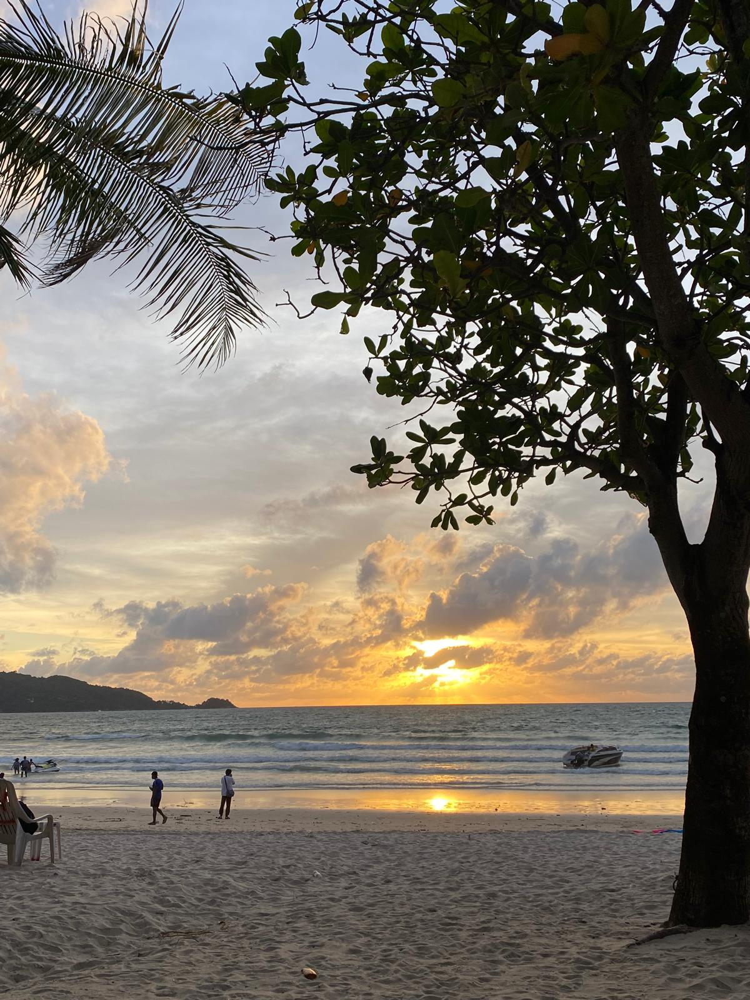
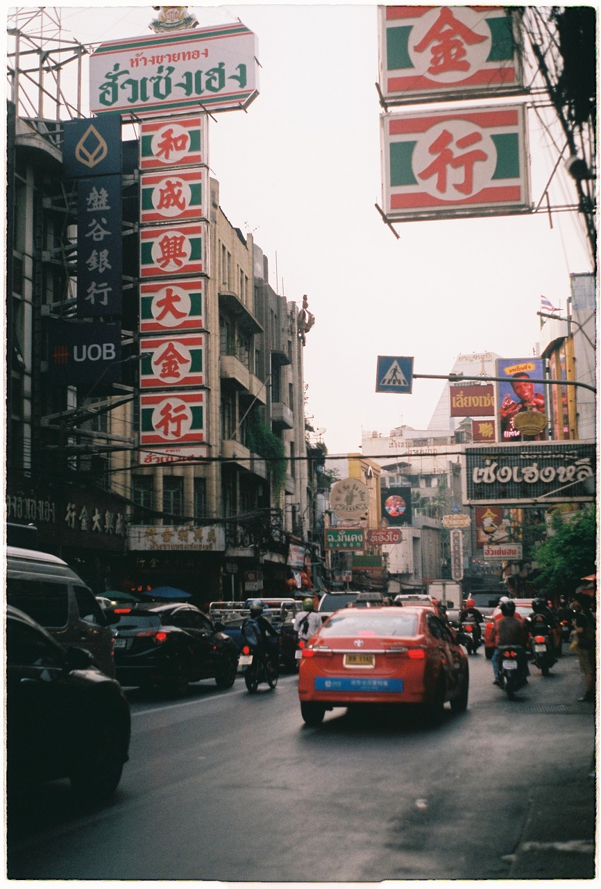
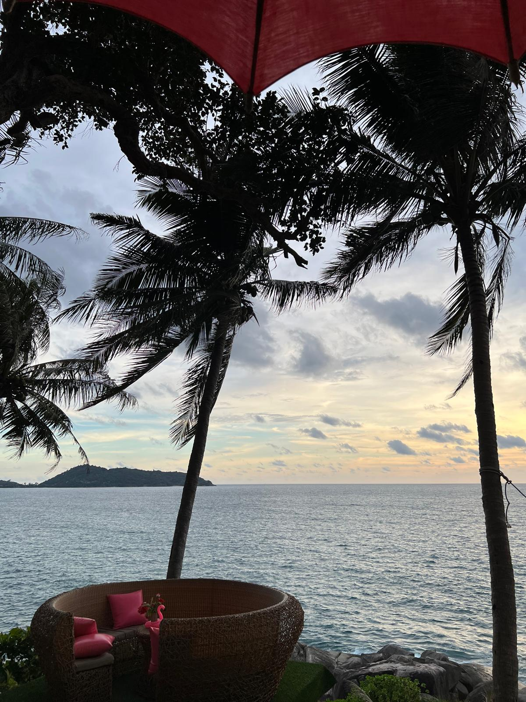
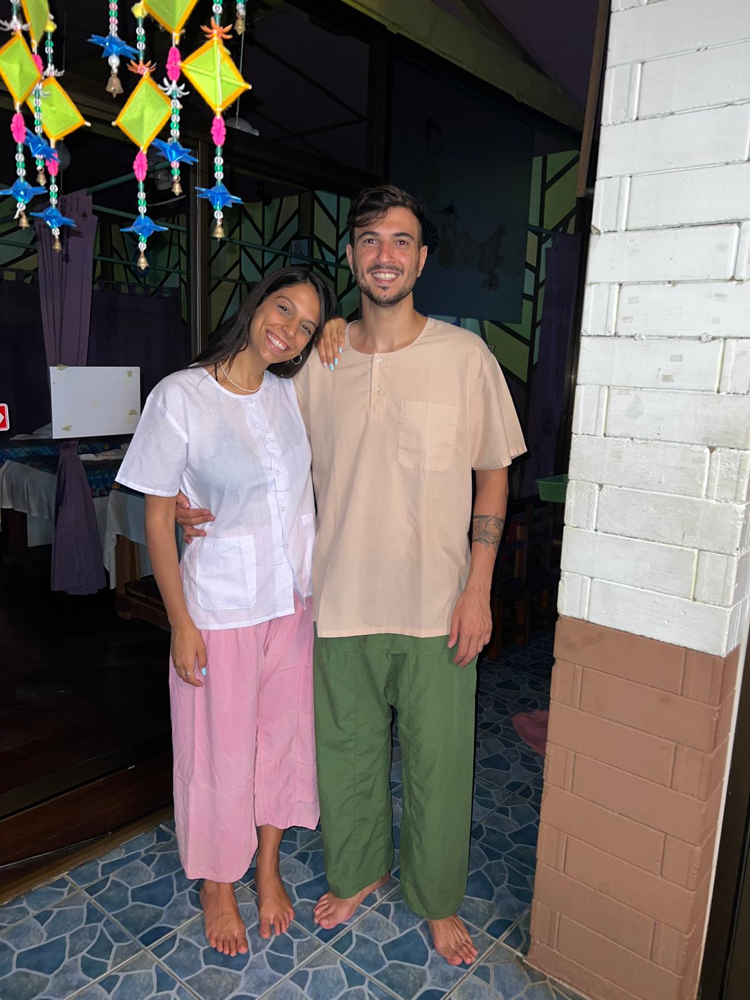
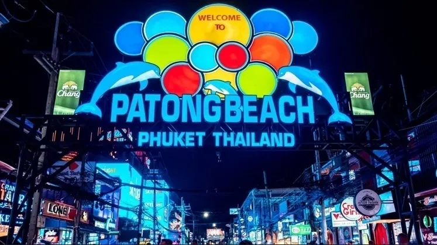
What to do in Phuket:
Soak up the sun: Phuket offers a wide variety of beaches, so you can find the perfect spot to relax and sunbathe.
Go on excursions: Explore the island, visit local villages, hike through rainforests, or take a day trip to nearby islands.
Indulge in a Thai massage: Treat yourself to a relaxing and rejuvenating experience.
Enjoy the nightlife: Patong offers a wide range of bars, clubs, and restaurants, so you can party the night away.